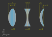
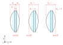

4.4. Defining Elements (Lens, RaySource, Detector, Filter, Aperture, Marker)#
4.4.1. RaySource#
4.4.1.1. Overview#
A RaySource defines the properties for rays that it creates, including
Emitting area/point/line
light distribution on this area (=image)
Emitted spectrum and power
Ray Polarization
Ray orientation
Ray divergence
Source position
4.4.1.2. Surface/Point/Line Parameter#
A RaySource supports the following base shapes Point, Line, CircularSurface, RectangularSurface, RingSurface, which are provided as first parameter to the RaySource() constructor.
circ = ot.CircularSurface(r=3)
RS = ot.RaySource(circ)
4.4.1.3. Position Parameter#
The position in three-dimensional space is provided by the pos-parameter.
RS = ot.RaySource(circ, pos=[0, 1.2, -3.5])
4.4.1.4. Power Parameter#
Providing the power you can define the cumulative power of all rays. This proves especially useful when working with multiple sources and different power ratios.
RS = ot.RaySource(circ, power=0.5)
4.4.1.5. Orientation Parameter#
The base orientation type of the rays is defined by the orientation-parameter.
For orientation="Constant" the orientation is independent of the position on the emitting area.
In this case you can provide the orientation vector using the s-parameter in cartesian coordinates.
RS = ot.RaySource(circ, orientation="Constant", s=[0.7, 0, 0.7])
Or with s_sph for spherical coordinates, where the first one is the angle between the orientation and the optical axis and the second the angle inside the lateral plane. Values are provided in degrees, for instance:
RS = ot.RaySource(circ, orientation="Constant", s_sph=[20, -30])
It is also possible to define orientations depending on the position of the rays. For this we need to set orientation="Function" and provide the or_func parameter.
This parameter takes two numpy arrays containing the x and y-position and returns a two dimensional array with cartesian vector components in rows.
def or_func(x, y, g=5):
s = np.column_stack((-x, -y, np.ones_like(x)*g))
ab = (s[:, 0]**2 + s[:, 1]**2 + s[:, 2]**2) ** 0.5
return s / ab[:, np.newaxis]
RS = ot.RaySource(circ, orientation="Function", or_func=or_func)
As with other functions we can also provide a keyword argument dictionary for the function, in our case this is done by the or_args parameter.
...
RS = ot.RaySource(circ, orientation="Function", or_func=or_func, or_args=dict(g=10))
4.4.1.6. Spectrum Parameter#
A LightSpectrum object is provided with the spectrum parameter.
For instance, this can be a predefined spectrum:
RS = ot.RaySource(circ, spectrum=ot.presets.light_spectrum.d75)
Or a user defined one:
spec = ot.LightSpectrum("Monochromatic", wl=529)
RS = ot.RaySource(circ, spectrum=spec)
4.4.1.7. Divergence Parameter#
Divergence defines how rays are distributed relative to their base orientation (orientation parameter).
With divergence="None" all rays follow their orientation:
RS = ot.RaySource(circ, divergence="None", s=[0.7, 0, 0.7])
Paired with orientation="Constant" all rays are emitted in parallel.
We can also define lambertian divergence, which follows the cosine law.
div_angle defines the half opening angle of the cone volume in which the divergence is generated.
RS = ot.RaySource(circ, divergence="Lambertian", div_angle=10)
divergence="Isotropic" defines divergence with equal probability in all directions, but again only inside the cone defined by div_angle.
RS = ot.RaySource(circ, divergence="Isotropic", div_angle=10)
User functions can be defined by divergence="Function" and providing the div_func parameter.
This function must take angular values in radians up to div_angle and return a normalized or unnormalized probability.
RS = ot.RaySource(circ, divergence="Function", div_func=lambda e: np.cos(e)**2, div_angle=10)
For all the combinations above we can also generate a direction distribution inside an circular arc instead of a cone. The correct way to do this is by setting div_2d=True. With div_axis_angle we can additionally define the orientation of this arc distribution.
RS = ot.RaySource(circ, divergence="Function", div_func=lambda e: np.cos(e)**2, div_2d=True, div_axis_angle=20, div_angle=10)
4.4.1.8. Image Parameter#
Alternatively to a uniformly emitting area there is the possibility to provide light distributions (=images).
For this the emitting surface needs to be a RectangularSurface. The image itself can be provided as numpy.ndarray, path or preset.
rect = ot.RectangularSurface(dim=[2, 3])
RS = ot.RaySource(rect, image=ot.presets.image.landscape)
image = np.random.sample((300, 300, 3))
RS = ot.RaySource(rect, image=image)
RS = ot.RaySource(rect, image="test_image.png")
Every image color generates a specific physical spectrum matching its color. This spectrum is a linear combination of the sRGB primaries in <>.
With image specified the spectrum is unused.
4.4.1.9. Polarization Parameter#
The polarization parameter describes the distribution of the direction of linear light polarizations.
In the default case the directions are random, specified by polarization="Uniform".
RS = ot.RaySource(circ, polarization="Uniform")
polarization="x" defines polarizations parallel to the x-axis.
RS = ot.RaySource(circ, polarization="x")
polarization="y" defines polarizations parallel to the y-axis.
RS = ot.RaySource(circ, polarization="y")
polarization="xy" defines random polarizations of x or y-direction.
RS = ot.RaySource(circ, polarization="xy")
The user can also set a user-defined value with polarization="Constant" and the pol_angle parameter.
The polarization direction is defined by an angle inside the plane perpendicular to the ray direction.
RS = ot.RaySource(circ, polarization="Constant", pol_angle=12)
Or alternatively a list with polarization="List", the angular values in pol_angles and their probabilities in pol_probs.
RS = ot.RaySource(circ, polarization="List", pol_angles=[0, 45, 90], pol_probs=[0.5, 0.25, 0.25])
Lastly, a user defined function can be set with polarization="Function" and the pol_func parameter.
This parameter takes angles in range \([0, ~2 \pi]\) and returns a normalized or unnormalized probability.
Above we talked how for instance for polarization="x" the rays are parallel to the x-axis. However, depending on their actual ray orientation this isn’t always the case. Read about what the angles mean for rays not parallel to the optical axis in <>.
RS = ot.RaySource(circ, polarization="Function", pol_func=lambda ang: np.exp(-(ang - 30)**2/10))
4.4.2. Lens#
4.4.2.1. Overview#
A Lens consists of two surfaces and a medium with a RefractionIndex between them.
Additionally we need to provide the position and some thickness parameter, that will be explained later.
4.4.2.2. Example#
sph1 = ot.SphericalSurface(r=3, R=10.2)
sph2 = ot.SphericalSurface(r=3, R=-20)
n = ot.RefractionIndex("Sellmeier2", coeff=[1.045, 0.266, 0.206, 0, 0])
L = ot.Lens(sph1, sph2, n=n, pos=[0, 2, 10], de=0.5)
To define a non-standard medium (not the one defined by the raytracing geometry) we can provide the n2 parameter, that defines the medium after the second lens surface.
n2 = ot.RefractionIndex("Constant", n=1.2)
L = ot.Lens(sph1, sph2, n=n, pos=[0, 2, 10], de=0.5, n2=n2)
4.4.2.3. Lens Thickness#
To allow for simple definitions of lens thickness and positions, there are multiple ways to define the thickness:
d: thickness at the optical axisde: thickness extension. Distance between largest z-position on front and lowest z-position on backd1: distance between front surface center z-position and z-position ofposof Lensd2: distance between z-position ofposof Lens and z-position of the back surface center
{kind=link}

Fig. 4.15 \(d\) and \(d_\text{e}\) for a convex lens, a concave lens and a meniscus lens#
While for a convex lens using the de is most comfortable, for concave or meniscus lenses the thickness at the optical axis d proves more useful.
For instance, a concave lens can be defined like this:
L = ot.Lens(sph2, sph1, n=n, pos=[0, 2, 10], d=0.5)
When the lens is defined by d or de the position pos[2] is at the center of the d or de distance.
With the d1 and d2 parameters we can control the position of both surfaces relative to the lens position manually. For instance with d1=0, d2=... the lens front starts exactly at the pos of the Lens.
On the other hand setting d1=..., d2=0 leads to the back surface center ending at pos.
{kind=link}

Fig. 4.16 Defining a convex lens by de=..., by d1=0, d2=... and by d1=..., d2=0.#
All cases in-between are also viable, for instance:
L = ot.Lens(sph1, sph2, n=n, pos=[0, 2, 10], d1=0.1, d2=0.6)
But only as long as the surfaces don’t collide. With a Lens object you can also access the thickness parameters:
>>> L.d
0.7
>>> L.de
0.022566018848339198
>>> L.d1
0.1
>>> L.d2
0.6
Or the parameters of its surfaces, like:
>>> L.front.ds
0.4511539144368477
4.4.2.4. Paraxial Properties#
As for a setup of many lenses, we can also do paraxial analysis on a simple lens.
To create a ray transfer matrix analysis object (TMA object) we call the member function tma().
From there on we can use it as described in <>.
>>> tma = L.tma()
>>> tma.efl
12.749973064518542
As the behavior can differ with the light wavelength, we can also provide a non-default wavelength in nanometers.
Since the lens has no knowledge of the geometry around it, the medium before it is also undefined. By default, a constant refractive index of 1 is assumed, but can be overwritten with the parameter n0.
>>> tma = L.tma(589.2, n0=ot.RefractionIndex("Constant", n=1.1))
>>> tma.efl
17.300045148757384
4.4.3. Ideal Lens#
An IdealLens focusses and images light perfectly and without aberrations according to the imaging equation. The geometry is an infinitesimal thin circular area with radius r.
Additionally we need to provide the optical power D and a position pos.
IL = ot.IdealLens(r=5, D=12.5, pos=[0, 0, 9.5])
As for a normal Lens a n2 can be defined. Note that this does not change the optical power or focal length, as they are controlled by the D parameter.
n2 = ot.RefractionIndex("Constant", n=1.25)
IL = ot.IdealLens(r=4, D=-8.2, pos=[0, 0, 9.5], n2=n2)
4.4.4. Filter#
When light hits a Filter part of the ray power is transmitted according to the filter’s transmittance function.
A Filter is defined by a Surface, a position and the TransmissionSpectrum.
spec = ot.TransmissionSpectrum("Rectangle", wl0=400, wl1=500, val=0.5)
circ = ot.CircularSurface(r=5)
F = ot.Filter(circ, pos=[0, 0, 23.93], spectrum=spec)
With a filter at hand we can calculate its approximate sRGB color. The fourth return value is the opacity for visualization. Note that the opacity is more like a visual extra than a simulation of the actual opacity.
>>> F.color()
(2.359115924484492e-07, 0.2705811859857049, 0.9999999999999999, 0.9838657805329205)
Calling the filter with wavelengths returns the transmittance at these wavelengths.
>>> wl = np.array([380, 400, 550])
>>> F(wl)
array([0. , 0.5, 0. ])
When tracing the raytracer sets all transmission values below a specific threshold T_TH to zero. This is done to avoid ghost rays, that are rays that merely contribute to the light distribution or image but are nonetheless calculated and reduce performance. An example could be rays far away from the mean value in normal distribution/ gaussian function.
By default the threshold value is
>>> ot.Raytracer.T_TH
1e-05
4.4.5. Aperture#
An Aperture is just a Filter that absorbs complete. In the most common use cases a RingSurface is applied as Aperture surface. As for other elements, we also need to specify the position pos.
ring = ot.RingSurface(ri=0.05, r=5)
AP = ot.Aperture(ring, pos=[0, 2, 10.1])
4.4.6. Detector#
A Detector enables us to render images and spectra on its geometry. But by itself, it has no effect on raytracing.
It takes a surface parameter and the position parameter as arguments.
rect = ot.RectangularSurface(dim=[1.5, 2.3])
Det = ot.Detector(rect, pos=[0, 0, 15.2])
4.4.7. Markers#
4.4.7.1. PointMarker#
A PointMarker is used to annotate positions or elements inside the tracing geometry. While itself having no influence on the tracing process.
In the simplest case a PointMarker is defined with a text string and a position for the Point.
M = ot.PointMarker("Text132", pos=[0.5, 9.1, 0.5])
One can scale the text and marker with text_factor or marker_factor. The actual size change is handled by the plotting GUI.
M = ot.PointMarker("Text132", pos=[0.5, 9.1, 0.5], text_factor=2.3, marker_factor=0.5)
We can also hide the marker point and only display the text with the parameter label_only=True.
M = ot.PointMarker("Text132", pos=[0.5, 9.1, 0.5], label_only=True)
In contrast, we can hide the text and only plot the marker point by leaving the text empty:
M = ot.PointMarker("", pos=[0.5, 9.1, 0.5])
4.4.7.2. LineMarker#
Similarly, a LineMarker is a Line in the xy-plane with a text annotation.
In the simplest case a LineMarker is defined with a text string, radius, angle and a position.
M = ot.LineMarker(r=3, desc="Text132", angle=45, pos=[0.5, 9.1, 0.5])
One can scale the text and marker with text_factor or line_factor. The actual size change is handled by the plotting GUI.
M = ot.LineMarker(r=3, desc="Text132", pos=[0.5, 9.1, 0.5], text_factor=2.3, line_factor=0.5)
We can hide the text and only plot the marker line by leaving the text empty:
M = ot.LineMarker(r=3, desc="", pos=[0.5, 9.1, 0.5])
4.4.8. Volumes#
4.4.8.1. BoxVolume#
As for a RectangularSurface, the parameter dim defines the x- and y-side lengths in the lateral plane. Parameter pos describes the center of this rectangle. For a BoxVolume this surface gets extended by length length in positive z-direction, forming a three-dimensional volume.
ot.BoxVolume(dim=[10, 20], length=15, pos=[0, 2, 3])
Additionally the plotting opacity and color can be specified:
ot.BoxVolume(dim=[10, 20], length=15, pos=[0, 2, 3], opacity=0.8, color=(0, 1, 0))
4.4.8.2. SphereVolume#
A SphereVolume is defined by its center position pos and the sphere radius R:
ot.SphereVolume(R=10, pos=[0, 2, 3])
As for the other volumes the plotting opacity and color can be specified:
ot.SphereVolume(R=10, pos=[0, 2, 3], opacity=0.8, color=(0, 0, 1))
4.4.8.3. CylinderVolume#
A CylinderVolume is defined by its front surface center position pos and the cylinder radius r:
ot.CylinderVolume(r=5, length=15, pos=[0, 2, 3])
As for the other volumes the plotting opacity and color can be specified:
ot.CylinderVolume(r=5, length=15, pos=[0, 2, 3], opacity=0.8, color=(0.5, 0.1, 0.0))
4.4.8.4. Custom Volumes#
A custom Volume can also be defined. It needs a front and back surface as parameter, as well as a position and the thickness distances d1, d2. These have the same meaning as for a Lens in Section 4.4.2.3.
We can for instance do this with:
front = ot.ConicSurface(r=4, k=2, R=50)
back = ot.RectangularSurface(dim=[3, 3])
vol = ot.Volume(front, back, pos=[0, 1, 2], d1=front.ds, d2=back.ds+1)
Here we define a conic front surface and a rectangular surface. front.ds, back.ds denotate the total thickness of both surfaces at their center. The overall length for this volumes is then front.ds + back.ds + 1, because an additional value of 1 was added.